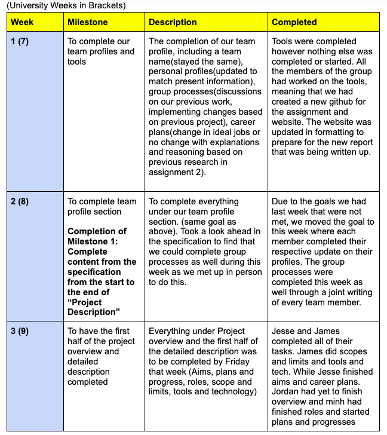
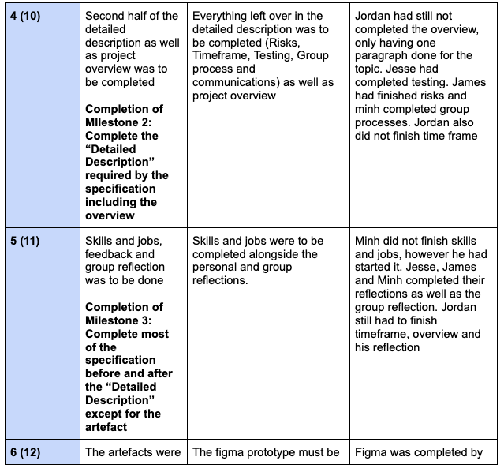
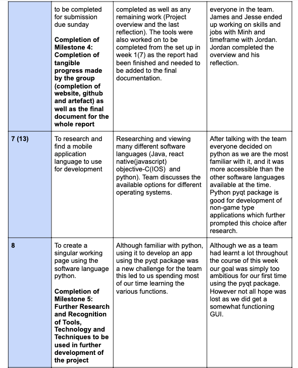
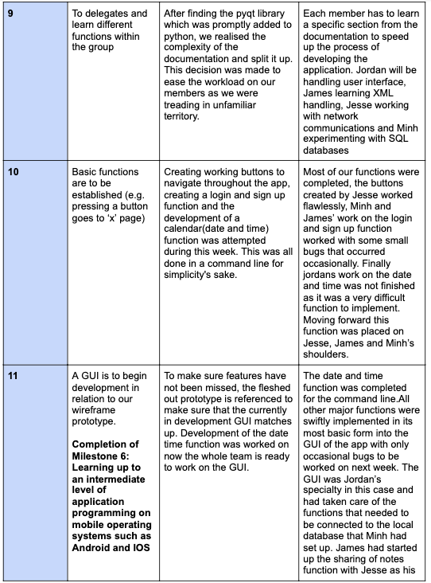
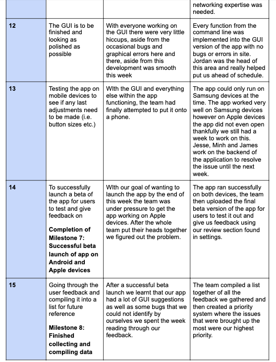
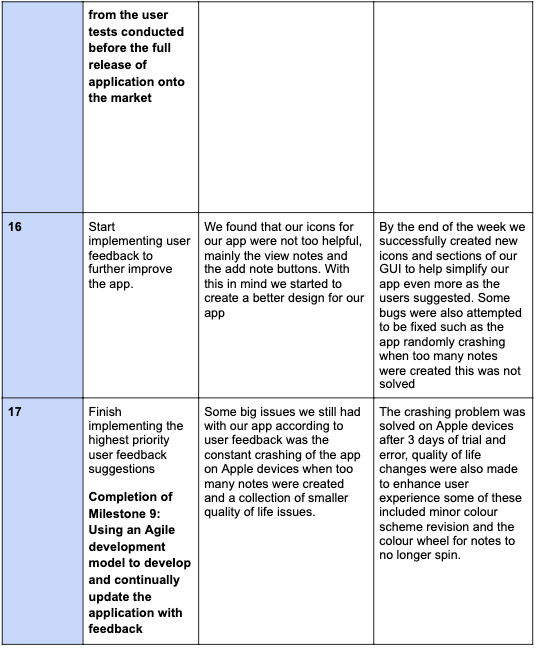

Project Plan
Overview:
Topic:
Our project is hyperfocused on creating an application that will successfully help people take notes within their daily lives without intruding or creating meaningless waste. Using a streamlined approach, using simplistic yet stylish concepts which are not intimidating to use with inspiration coming from sticky notes. A common household item, which has proven to be very convenient, our team plans to move the whole platform onto an electronic mobile platform, also known as smartphones. In the new age, phones are essential in life for many functions such as entertainment, communication and as a tool with many applications. Everyone who owns a phone has a notes app that they use sparingly and we want to change that because we think the implementation of a defaulted application like notes is wasted. We know that the space can be better used, and our main goal is to bring the notes-type application to be one that is used and relied on more as a tool to help people in their daily lives.
The goal that our team strives to achieve is one where at the end of the day people use an application that will integrate seamlessly like one of similar nature to people’s lives. Having one application that will enable users to take notes quickly, effectively and with ease is our goal as what we hope to with the applications is to enable people to create good habits as a result of using our app for either a personal or social landscape. We believe a subtle change in people’s daily lives using an application such as our own implementation, will not only improve the peoples lives but in turn, create a cycle where notes will be deleted by the users decision. We promote this as taking notes is not only a good habit that our team believes is beneficial to everyone, it is one that supports human functions such as cycles, good habits, memory and muscle memory. Another perspective to this would be one that is similar to flash cards with implementation that is more generalised and is not seen as an app that is meant to teach but rather support actions similar in the background. In the end, we want people not to rely on this application as an all in one, take back your life type app, but rather an application that supports people in their endeavours whatever they may be by utilising something that feels natural.
Motivaiton:
The motivation for this app was one that stemmed from multiple members of our team, after all, our team gets along quite well when working on our projects and outside of work. Our conversations were met with the reality of major corporations in the present day, where multiple products are required to complete a single task that should be quite simple on its own. The influx of the companies that now take this same approach due to the now widespread internet for profit is rather sad. We can see that the market is now flooded with products which are almost clones of each other, not fixing the main issue which is prevalent within all of them. Locking certain functions of a product behind a paywall and the need to purchase many products from the same people to have something that actually functions to complete what they promised. This type of misleading marketing from major corporations we believe is revolting and we absolutely do not condone this type of direction for any company.
The idea for this application came from the great minds of our team, where our sustained use of applications such as the notes app on our respective devices whether it be on a fully fledged personal computer or a smartphone, we use notes a lot. We realised the limitations that come with all these note-type applications that we use, it was that there was never one fully featured enough, with each application trading blows with each other in terms of features. This is due to the fact that the solutions that these companies come up with are trying to reach a bigger market for profit with no type of aim for their audience as long as more people use their products. We believe that our app will not only avoid all these problems that people encounter with their lifestyle products, but actually support and improve people’s daily lives as we take the idea of a sticky note and push the envelope of the concept to its full potential. Instead of approaching a notes app like all the competitors out there, we realise that the whole notes concept is an intimidating one, comparable to diaries and notes taken by hand on paper, which deters people from using the product as a whole. However the sticky notes approach we have taken, with inspiration from real life sticky notes, twitter tweets and flash cards is something we believe to be easier to digest and less intimidating to people. Our implementation of this application will only be supporting smartphones to streamline and integrate into people's lives as in the present age of technology, a smartphone is essential to all landscapes of life such as personal, social and in a professional one. As a small group, we want to create a meaningful way to support people with our product instead of exploiting them, and this motivation is something that we will push ahead with. This vision is something our group shares and hopefully is expressed to anyone who takes interest or uses this product.
Landscape:
The competition around the note concept across all the platforms currently available in the current landscape where technology has taken over our lives, having a notes app is mandatory on these platforms. This space that the note app takes on these platforms are all different in features and although are mandatory, have less effort put into and are often neglected as the implementation is often unsatisfactory. These platforms do have the ability to install applications that are more feature rich and are actually useful as products to people. Whilst a notes app is a staple within these platforms, the third party applications that have stood to be not only much better than the mandatory implementations, but also stand as an essential to all people searching for an application for taking notes.
Apps such as Evernote, OneNote, Dropbox Paper, Apple Notes and Google Keep are standout products that we identify as competitors. This is due to the fact that they have cemented themselves as products that people rely on and trust in. Major companies such as Google, Apple, Microsoft have taken a shot at creating a note app worthy of the people but the main thing that differentiates our idea and the competitors is the reasons we use notes in the first place. When we think about notes, we usually take notes to remember things for next time and certain notes have attributes such as time, locations and lists. We take all these things into consideration and have implemented them into the apps functions making it convenient for users to schedule things with notes, create notification reminders, have notes react based on location and most importantly is to take notes from anywhere on the smartphone, using widgets and smart touch controls. Convenience is the main thing where we believe our app is easier to use and get to, with features that can actually be integrated into people’s lives to support and enable them to get what they actually want done.
Detailed Description
Aims
Main Goal:
Our main aim with this project is to help streamline and simplify the process of planning and scheduling important events upcoming in the users life due to other applications (i.e. Facebook and Instagram) being inefficient when it comes to this problematic matter. This core aim will be achieved through an accumulation of smaller goals that will all come together to achieve this overarching aim. These smaller goals/aims include having a sleek and minimalist design and having the project run on apple and samsung smartphones. This goal is an absolute must to successfully complete and create a functioning project. The reason for this goal being the most important part of the project is that if this specific criteria is not met, the whole project will fall apart with the final product becoming a clunky and convoluted mess that fails at its core aim.
Sub Goal 1:
Having a sleek and minimalist design is the second most important goal for ensuring the main aim is achieved. The minimalist design has been picked to stop the potential of the app being cluttered and over crowded with colours and buttons. The design being simplistic will make it very easy to pick up and use the app without a simple design the app would be deemed unusable within the first minute of picking it up. The design is equally important to the app actually running on a mobile device, however if a scenario occurs where the current state of the app doesn't even run on a single mobile device (apple or samsung) then the design will come later. Aside from this potential issue, the design of this app is very important and an integral part of achieving our goal. If the design is executed well the app will be very easy to navigate thus helping to achieve our goal of streamlining and simplifying the process of planning and scheduling.
Sub Goal 2:
Making this app work on mobile devices is essential to achieving our goal because if the app doesn't run on any mobile devices then ultimately none of our other goals can be completed. While having the app run on mobile devices is vital to making this project a success, the process of making the app run on a mobile device appears to be rather easy, meaning this aim will take the least important role out of our current set of goals/aims. As stated earlier if the situation where this task proves to be rather difficult arises then this process will take center stage over the design of the app to ensure that we at the very least have a functioning prototype/app. Overall the severity of this goal is rather high however it is at the bottom of our priority list. If the app can only run on either samsung or apple devices instead of both then that will be achieved. Our original goal is to have this run on both apple and samsung devices as it will be vital in including as many potential users as possible however in the case of emergency or lack of time then only one device will be supported.
Plans and Progress:
This project idea began during a discussion about combining several ideas. We originally settled down with a sharable sticky note application to streamline the process of planning and organisation for events. The idea was formed from a combination of a seamless cloud storage and a sticky note calendar. We decided to dedicate this software towards project organisations or families and friends who want to share a schedule together and set up events. The application will contain the following features: notes, group interaction, calendar and profile. The main focus of this application are the notes, users can choose to type whatever they desire onto the notes which will be displayed in the homepage. The notes are intended to remind users about their work or to record information about topics, this application is about simplicity but expanding its capabilities to more real-world uses whether it be part of a job or a user’s daily errands. The notes will have the standard format, an A5 blank page with the toolbar to fonts and format the page. Outside of the page, the user can choose to group notes together and while using them can select a tab just like Microsoft Excel except it will be displayed on the top for convenience. The next function is the group feature, this is the social aspect of the application where people may share each other's notes or start new ones. Similar to google docs, a share button will be present on the note’s page where the user can share about email or username therefore allowing groups of people to have access to the same type of notes but also change and update. There is also an admin feature for the original owner of the notes to decide whether the notes be read only or be edited by other users. The other branch of the application that expands the note-sharing idea is the use of calendars, Users can tag notes to certain dates which all members shared with can be able to view. They can also choose to set reminders and notifications to further emphasise the importance of a given event. For the design state of this application, our group will design the interface together and discuss the user interface and user experience to ensure that the use of the app is streamlined and simple. Using figma, we will design our first prototype and decide on the interactions that will happen within our app.
In the first week, we were setting up our environment online to where we will be working on the project plans. During the week, we had set up the tools on github, the report document that was to be shared and used by the group on the descriptions and also the links and chat were also set up on our discord server for us to be able to share and communicate. We often used to discord to check up on each other’s status and availability for meetings. Overall during the first week there was no real significant progress. Followed week 2 which is when we had our first meeting on microsoft teams, during the meeting we had decided to approach the project plan in three parts. The first part would contain half of this project plan, in this plan we worked on the Overview and project description. The change we made in our description was the change to figma from proto.io over convenience since we have already used figma but also did not want to work on the artefact under a 2 week trial even if it was sufficient. Our goal and design remained the same and was purely expanded but at this stage we have not decided how the app will look and its design other than how we want to design the application which is to be simple and easy, but also appeal to friends and families where the the users will treat the application as a handy social-like application, the application is also targeting for professional work environments. By week 2, the project description and overview were still incomplete. In week 3 the second part was assigned and everyone agreed to meet live for a group-work session. Progress was not as smooth since the work was mostly done, there were plenty of areas to patch up in the project plan before we could move on to the artefact. By week 4, the reflection overview was complete and the description was 80% since there was still more added since we had not started the artefact. Skills and Job was partly complete as it was split up to each member of the group to complete the work. In week 5, approximately 75% of the project plan was completed leaving only the artefact, presentation and fine tuning of the report. The artefact was completed in week 6 along with everything else. The major problems throughout the entire timeline was that we were down a week but also worked inefficiently for some of our sessions.
Group Meetings were mostly agreeable, as we had chosen what we wanted for the application. But at some point one of the group members planned on including a proximity-based location system that would be used to allow users to share notes which we thought was not needed and would be a bit difficult to deal with. Our Online sessions setted our goals and established how we wanted to approach the project as the time was used for discussion. But live sessions which were used for group work were inefficient on some days as not enough work was done which delayed the development and discussion of the prototype which would be done last week, the delay from the lack of work during the first week would have given us time to test and improve the prototype in the final week. Not too many decisions were apparent during the making of this project plan and therefore no need to change much about the application’s design since we found that it would work relatively well, looking at google doc, twitter and facebook. We wanted something similar on application that would allow people to be more flexible with their notes but still have the appeal of modern social media applications. This is what inspired our design for the prototype in figma, simple, easy and convenient. Google Docs is known for being able to write documents but also share them flexibly and allow collaborations, but it did not have an expanded group system or calendar associated with these documents. Facebook and Twitter are popular due to being able to share posts about our stories, our application isn’t focusing on being a social app but we used aspects of it to help emphasise the sharing aspects that google docs lacked. Therefore we decided to maintain these functions from the last assignment.
For the design of the artefact, We used figma to develop the prototype as the entire group was already familiar with figma therefore had the advantage of using its features decently well to design our application. We chose a white theme with simple shapes for our interfaces and the main symbol being a bird holding a mail since it represented the aspect of our application being used to share notes to other users but also the looks of the application needed to look simple and neat. The name chosen is called ‘Flynote’ since it’s very easy to understand the concept behind our idea of sending notes to other people. The application contains a home page where the title is on top, the centre of the page is where saved notes with titles will be stored to provide easy accessibility. When the user taps on the note, it will appear closer to the screen presenting the information contained in the note but also give the option for the user to edit the note or share it to other users. There is also a search feature on top and a scroll bar on the right side to help users navigate their notes easily. Below the notes in the home page were four buttons, to open the calendar, New notes, groups and profile. The calendar page presents the current month of the year, in that month scheduled notes will be present on certain dates that the user is a part of from a group. When the day is due, the note will appear with a notification to alert the user. Users can also choose to create a scheduled note by tapping on a day during the month which will transition them to a short page containing title, description and time and also the option to either make it private or share it to other groups. Then the note will appear on the date after following the procedure. The next page is the new note page which is really simple, it contains the Title, description and option to change the colour of the notes, then the user can choose to save or share. The group page contains the groups the user is part of, they can select a group and view the notes shared from that group.
If we were to work on this in the future, we would have used python to code the application, then test the application for any vulnerabilities and just perform all the manual tests to ensure that the application follows the project and is functional. Then it would have been given to a select group of target users which are people who use phones on a daily basis. From there we would adjust the design of our application accordingly. By following the agile methodology, we would finish the app and release it, then receive feedback and make changes and improvements to the application.
Roles:
For this project there are only a few roles which are not enforced but do focus on the main stages of the application’s design. The role focused on the looks and design of the app will be given to the user interface designer and user experience designer, intuitive understanding and appealing designs are crucial for an application’s success; The user should be able to easily understand the majority of the functions under the expectation that these users are familiar with technology on a daily basis. The user interface designer will focus on the appearance and objects of the application such as colour palette/theme, buttons, animation and other visual aspects; The result of good design will lead to an eye-catching and aesthetic appearance to the application. The user experience designer will focus on the functionality and effectiveness of the application, the user experience designer focuses on any choke points and addresses it from the start to end of the product to provide and smooth experience; the user should be in a state of flow, meaning the user is fully immersed and is handling the application efficiently and without flaw. The UX designer’s job overlaps with the UI designer’s but is mainly focusing on the effectiveness of the app. The last role is the software developer, the one who will develop the functionalities and perform all the coding, but also testing and incorporating any given specifications from this project.
Scopes and Limits:
Due to the lack of time we have, we will not be able to completely finalise our project, which is a social note-sharing application to mark important dates/events among groups. We chose figma to design the wireframes of our application because of the straightforward nature, but predominantly due to our experience with it. There are many factors as to why we chose not to design wireframes for computers but only on mobile phones as an application for users causes it to be more convenient for them to use anywhere and anytime. In addition, making our application for computers defeats our goal of convenience and does not reinforce our aim of creating an application that can be used anywhere and anytime largely since it is not something that users would be equipped with anywhere and everytime very often in opposition to a mobile phone. Designing a wireframe for a computer device after developing one for mobile devices is time consuming and would require more features within the large screen size and therefore be perceived as irrelevant. Overall, the lack of time we have indicates that we should not further refine our project idea, and therefore sways us away from perfecting it as each one of us desired.
Tools and Technologies:
Together as a group, we decided to employ figma to design the wireframe of our application due to our experience with using it in our user-centred design class. Consequently, we ended up using it over proto.io as a result, despite the fact that we initially chose proto.io. A factor that caused us to convert is because there is a 15 day free trial, and afterwards, credit card details would need to be input and money would be taken if we wanted to access our wireframes again. However, in order to design the wireframes and development of our application, we used a windows computer. With concern to the programming language, we used python due to the simple nature, reliability and efficiency. Also, the implementation of python code in comparison to other programming languages to aid the Graphics User Interface(GUI) in a more refined level can be compelling for users. Ultimately, the product will be released solely on mobile phones for users on the google play and app store.
Testing:
When it comes to testing our project our team will be using what is known as the agile methodology. This methodology is when as soon as a functioning requirement is completed testing on it would begin immediately. For example in our project when the ‘add not function’ is completed it would be tested to see if it actually works. We will know that we have succeeded when the project runs in full and achieves all our criteria. This criteria being, It must run, There must be no bugs, aesthetically pleasing and simple to use. To achieve the last criteria user testing is an absolute must. To find potential test users, friends and random strangers found on the street shall be asked to quickly participate in using the artefacts provided to help gain feedback on the app and its development. Strangers have been decided as a must because friends and family hold a bias towards us the developers therefore potentially skewering the reactions to the app. By following these guidelines and methodology our project will hopefully achieve everything we set out to do as a team.
Timeframe:
     Risks:
There are a plethora of risks that might pose an obstacle for our application in regards to the app store and google play store area. This includes our note-sharing application not fitting the criteria or policy, which we have no way of publishing our work. There is a yearly fee of $99 to pay once an application is submitted in the app store, while in the google play store, a one-time payment of $25 is required. This creates an impediment for developers like us who lack finance. Additionally, users may dislike the application, aiding in the wastage of precious resources such as time and money. Therefore, in order to avoid the foregoing mishap, user-testing should be implemented. In contrast, if the application is booming, it will need to be managed firmly and professionally, in order to not lose face.
Group processes and communications:
Expectations and communication are vital in this project, as we intend to meet online on microsoft teams twice a week to delegate tasks and discuss how tasks will be completed but also set schedules for future face-to-face sessions; Discord will also be used to follow up on the status of each member and their work; we clarify our status during the week by ensuring that we leave a note about our absence at any time during the week or after or ask the other members to adjust our scheduled meetings. Once we have set our schedules, our group will meet up in person to work on the project together and look over each other's work and provide instant feedback. Every member is expected to complete all the work set during the meetings on microsoft teams unless specified otherwise. If a member is not present for a meeting on microsoft teams, then it will be postponed, but for the face-to-face sessions then it will be conducted since it is a convenient time for most of us that are meeting up live.